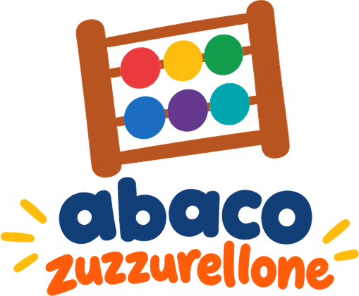

Indovina la parola segreta.
A ogni tentativo ti dico se si nasconde prima o dopo la tua, in ordine alfabetico.
Hai i tentativi contati: buona caccia!
NUOVA PARTITA
IMPORTA PARTITA
Durante una partita, ESPORTA copia il suo codice: incollalo qui per riprenderla.